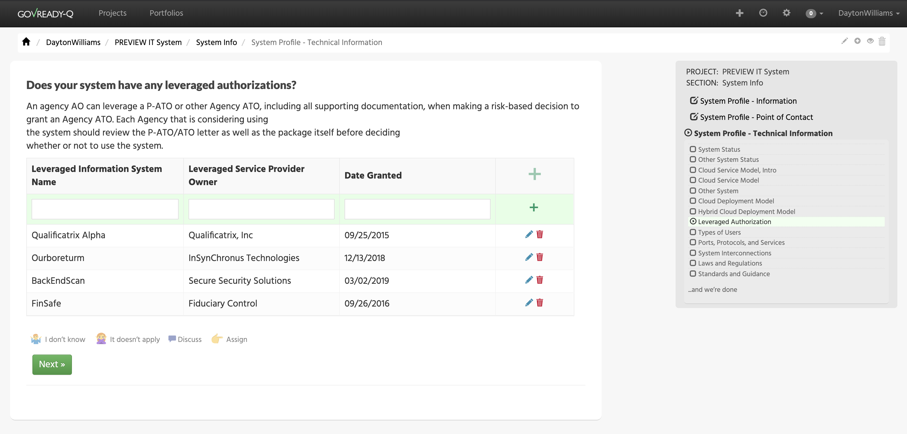

March 31, 2020
As of our March 2020 update, GovReady is now outfitted with a new question type for our compliance questionnaires —— the data grid! The data grid question type, for a user moving through a GovReady questionnaire, appears as an interactive spreadsheet where more complex and specific information can be input into our database. With the data grid question type, GovReady can collect a larger variety of information faster from a single question rather than spread out over the course of many questions and then store it as a json object.
Keeping in the spirit of our open source ethos, GovReady’s question type is powered by the open-source jsGrid. jsGrid supports GovReady’s question type by filtering on different criteria, adding and updating records, sorting with user interaction and with an api, supporting different data types, and offering customizable options for presentation. You can learn more about jsgrid, here!
Data grid in action!